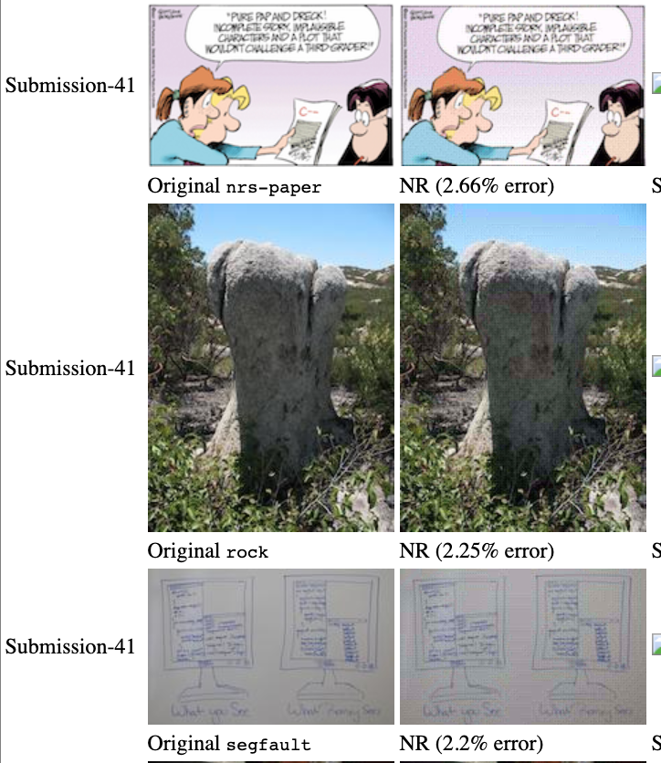

In my sorority, Kappa Alpha Theta, we have a points system. If you miss events without an excuse, you lose points. If you go to non-required events, you gain points. To be in good standing and be able to go to fun events such as formal, you must be at 0 or positive points. Currently, members have no way of knowing their point values without reaching out to the VP of Administration, who keeps track of everyone's points. We also cannot just have an excel spreadsheet for everyone to view because points are supposed to be private. In order to fix this issue, I created the Theta Tracker. Each user is given a unique password, which they can use to login to this website and check their points. Additionally, I added a dues checker as well since I am VP of Finances and would like to consolidate all of this information into one program. There also is a feature for members to check when their points and dues were last updated.
In Spring 2022, I, along with my classmates Scott Fullenbaum and Grace Hindermann, worked to model and quantify the evolution of music, along with showing how a multitude of influences have shaped music history. We approached the problem by using three different ways to evaluate and model the influence of music over time: a directed graph among artists, least squares regression looking at data vs time, and Neural Networks classifying music by genre. The results of each method are detailed in the paper.
Designed a web application with 3 classmates that utilizes MongoDB to create user profiles, add workouts, search for relevant exercises in an API, view past workouts, and edit and delete past workouts.
In Fall 2023, my programming partner, Stephen Chakoudian, and I applied a Discrete Cosine Transformation and bit packing techniques to compress a ppm image to a binary file. We utilized bitwise operations to decompress a binary file to a ppm image while averaging 2% data loss.
Tufts has a program called the ExCollege where undergraduates can teach classes on a topic of their choosing. I've always had a fascination with Disney's complex legacy. My inspiration for the course came from the line in “Part of Your World” from The Little Mermaid where Ariel sings “Bright young women, sick of swimmin', ready to stand.” The juxtaposition of these words against the plot of the film started to make me think more deeply about the role Ariel and other Disney Princesses play in their feature films. In turn, this course was born.
One of the coolest moments of the course was coordinating Susan Egan, the voice of Meg in Hercules, to speak to the class!